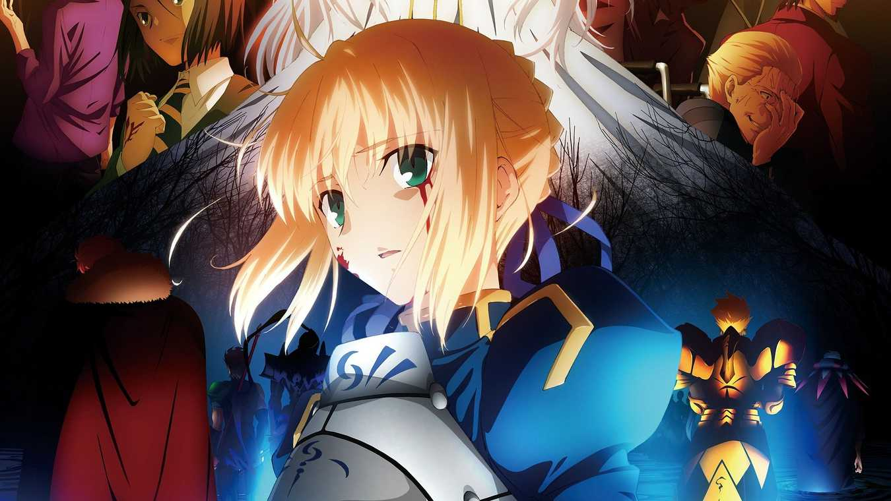

综合区
新人报到区
主题：1万，帖数：6万
讨论版（不限制话题）
主题：62，帖数：426
Games & Animan


Fate Kaleid Liner
原作：广山弘、TYPE-MOON
监督：大沼心、神保昌登、高桥贤
角色设计：牛岛希、平田和也
音乐：加藤达也
动画制作：SILVER LINK.
制作：“魔法少女☆伊莉雅→2wei!→2wei Herz!→3rei!!”制作委员会
Fate Apocrypha
原作：东出祐一郎/TYPE-MOON
作品原案：近卫乙嗣
监督：浅井义之
美术监督：井上一宏
色彩设计：茂木孝浩、土居真纪子
音乐：横山克
制作：A-1 Pictures
Fate Extra Last Encore
原作：TYPE-MOON、Marvelous
系列构成：奈须磨菇
角色原案：ワダアルコ
角色设计：泷山真哲、山村洋贵
美术监督：望月卓磨
色彩设计：日比野仁
动画制作：SHAFT
Fate Stay Night[Heaven's Feel]
原作：奈须蘑菇、TYPE-MOON
导演：须藤友德
编剧：桧山彬
人物原案：武内崇
音乐：梶浦由记
动画制作：ufotable
影片发行：Aniplex